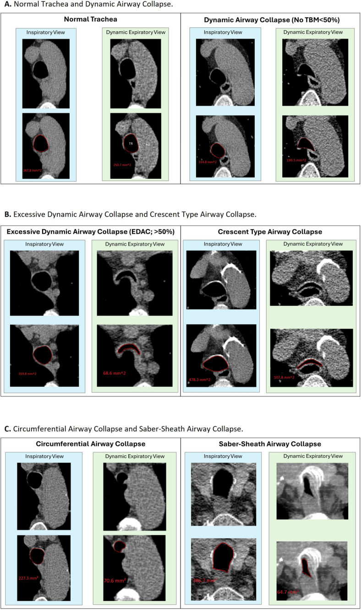
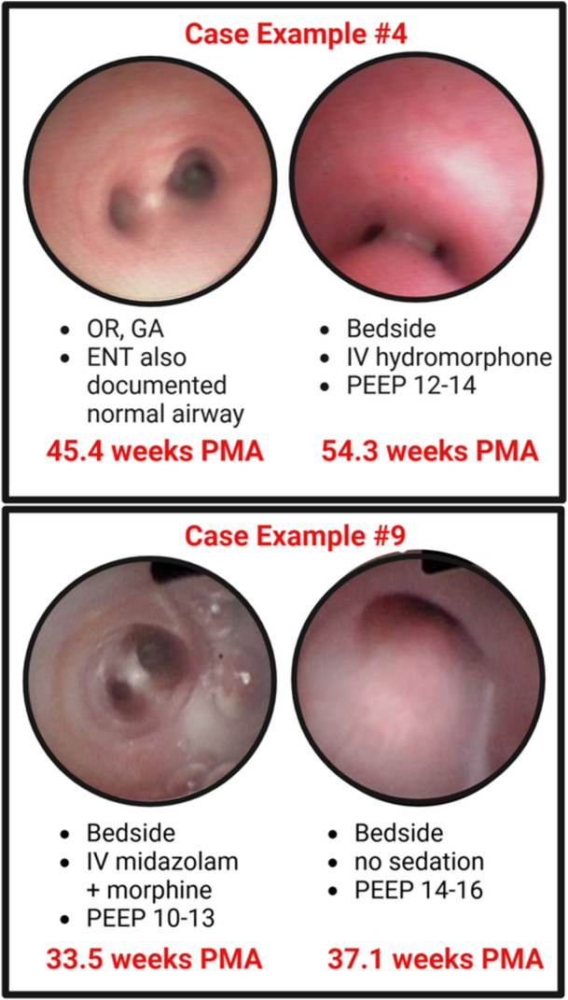

602 — Tracheobronchomalacia ở trẻ BPD: chẩn đoán động học (nội soi, CT 4D) & chỉ định can thiệp / Tracheobronchomalacia in BPD
Tags: pattern:tbm pattern:xep-duong-tho pattern:bpd vung:duong-tho-nhi vung:phoi-nhi protocol:noi-soi-phe-quan protocol:CT-dong score:NICHD-2018
Mức chắc chắn (certainty): tổng hợp y văn (literature synthesis) — tự biên từ ba nguồn mở: đoàn hệ 56 trẻ BPD độ 3 được nội soi phế quản (Adaikalam SA và cs., Pediatr Pulmonol 2025, PMC12606695); nghiên cứu đồng thuận đọc CT động (Cortes-Puentes GA và cs., Sci Rep 2025, PMC11762705); và tổng quan aortopexy 473 trẻ (J Clin Med 2025, PMC11857069). Không gắn một bệnh án đơn lẻ.
1. Tổng quan bệnh học – cơ chế hình ảnh: "van một chiều" ở đường thở trung tâm
- Định nghĩa: tracheobronchomalacia (TBM) là xẹp đường thở trung tâm > 50% diện tích lòng trong thì thở ra (hoặc khi ho), do yếu sụn khí quản/phế quản và/hoặc màng sau mềm, rộng. Khi hẹp ≥ 50% → TBM; EDAC (excessive dynamic airway collapse) là xẹp ≥ 50% nhưng sụn trước còn nguyên hình dạng, chỉ màng sau lồi vào.
- Dịch tễ: TBM gặp 30–50% trẻ BPD; trong đoàn hệ BPD độ 3 được nội soi, 66% (37/56) có TBM khi theo dõi nhiều lần. Chỉ 33% trung tâm trong BPD Collaborative nội soi phế quản cho "phần lớn" trẻ BPD nặng — nghĩa là đa số trẻ không được tìm TBM.
- TẠI SAO BPD gây TBM: (1) thở máy kéo dài + áp lực dương làm tổn thương sụn và niêm mạc; (2) viêm + phù làm màng sau dày, mất đàn hồi; (3) tăng áp lực lồng ngực khi thở ra (do ứ khí, phổi kém đàn hồi) tạo gradient xẹp lên đường thở mềm; (4) giảm trương lực cơ trơn do non tháng và thuốc an thần. Kết quả: đường thở trung tâm trở thành van một chiều — khí vào được, ra khó.
- TẠI SAO trẻ "không cai được máy": mỗi lần thở ra, khí quản xẹp → ứ khí + tăng CO₂ + giảm oxy, trẻ phải thở nhanh hơn → càng tạo áp lực âm/xẹp hơn. Đây là vòng xoắn điển hình của BPD + TBM; phối hợp này làm tăng nhập viện kéo dài, phụ thuộc mở khí quản và tử vong.
- TẠI SAO chẩn đoán khó — "thuốc an thần che mất bệnh": trong 56 trẻ BPD độ 3, lần nội soi đầu bỏ sót 35% trường hợp TBM; 77% ca bỏ sót có an thần sâu hơn lần sau; 54% được nội soi trong phòng mổ dưới gây mê toàn thân. Trung vị 6,7 tuần sau mới phát hiện. Lý do: gây mê + thông khí áp lực dương "giằng" đường thở mở ra, cơ giãn → mất dấu xẹp động.
- Ngưỡng định lượng nằm lòng:
- Nội soi: xẹp > 50% ở bất kỳ đoạn nào trong 3 đoạn (khí quản xa, phế quản gốc phải, phế quản gốc trái) = TBM. Đồng thuận giữa 2 người đọc 79%, κ = 0,57 (trung bình) — đủ để chẩn đoán "có/không", kém để chấm mức độ.
- CT động thì thở ra: giảm ≥ 50% diện tích lòng so với thì hít vào. Ví dụ trong hình: EDAC 337,8 → 68,6 mm² (giảm 79,7%); thể liềm 378,3 → 107,8 mm² (71,5%); thể chu vi 227,3 → 70,6 mm² (68,9%); thể "lưỡi kiếm" 386,7 → 84,7 mm² (78,1%). Xẹp sinh lý < 50% không gọi TBM.
- Dự báo trước nội soi: PEEP trung vị 13 cmH₂O ở trẻ có TBM so với 10,5 cmH₂O ở trẻ không TBM; mỗi +1 cmH₂O PEEP làm tăng 36% khả năng có TBM (OR 1,36); OSI > 12 làm giảm khả năng TBM (OR 0,24) vì gợi ý bệnh nhu mô nặng hơn. Mô hình có độ nhạy 86%, độ đặc hiệu 30%, AUC 0,69 — dùng để chọn ai cần nội soi, không để chẩn đoán.
- Điều trị — vì sao không có "thuốc đặc hiệu": nong đường thở bằng CPAP/NIV/PEEP là bước đầu; aortopexy (treo quai ĐMC lên) cho TBM do chèn ép từ trước; tracheopexy sau cho màng sau lồi; mở khí quản cho thể lan tỏa nặng. Tổng quan 473 trẻ aortopexy: thành công 84%, nhưng 40,8% còn triệu chứng dai dẳng; 92,1% là TBM thứ phát (teo thực quản 54,1%, động mạch cánh tay đầu lạc chỗ 16,1%, vòng mạch 8,3%). Stent đường thở ít dùng ở trẻ vì mô hạt, di trú và khó lấy khi trẻ lớn.
2. Mẫu hình + chẩn đoán phân biệt theo cơ chế & vị trí (Gamut)
- Mẫu hình "TBM điển hình": trẻ sinh non < 32 tuần**, BPD **độ 2–3**, **khó cai máy hoặc khó cai oxy**, **thở rít thì thở ra**, **xẹp phổi tái diễn cùng vị trí**, **"cơn ngừng thở–tím" khi bú/khóc**, X-quang **ứ khí + xẹp thùy**. Nội soi: khí quản xẹp **> 50% khi thở ra, có thể lan phế quản gốc.
- Gamut theo hình thái (CT/nội soi):
- EDAC — sụn trước còn hình chữ C, màng sau lồi vào, xẹp ≥ 50%.
- Thể liềm (crescent) — sụn trước mềm, bè ra, lòng xẹp ≥ 50%.
- Thể chu vi (circumferential) — xẹp cả thành trước và bên, thành dày.
- Thể lưỡi kiếm (saber-sheath) — thành bên mềm, lòng hình chữ A.
- Thể hỗn hợp — phối hợp ≥ 2 kiểu; tiên lượng và lựa chọn mổ khác nhau.
- Gamut theo vị trí:
- Khí quản đơn thuần: thường do chèn ép mạch máu (động mạch cánh tay đầu, quai ĐMC) hoặc sau hẹp thực quản–khí quản.
- Phế quản gốc: bronchomalacia — hẹp do sụn yếu, sau nhiễm trùng, hoặc chèn ép bởi động mạch phổi/hạch.
- Lan tỏa (khí quản + hai phế quản gốc): thể nặng, thường cần mở khí quản hơn là mổ treo.
- Gamut "trẻ BPD khó cai máy" — đừng chỉ nghĩ TBM: BPD tiến triển, tăng áp phổi, hẹp dưới thanh môn/hẹp khí quản, u hạt sau đặt nội khí quản, vòng mạch chèn ép, liệt cơ hoành, trào ngược/hít sặc, thiếu máu, suy dinh dưỡng.
- Mnemonic "FLOPPY": Floppy central airway, Long-term ventilation, Obstructed expiration, Prematurity/BPD, Positive pressure masks it, Young age (thường cải thiện theo tăng trưởng).
3. Bảng so sánh phân biệt (ma trận đối chiếu)
| Thực thể (entity) | Hình ảnh điển hình | Chốt vào (rule-in) | Chốt loại (rule-out) | Gợi ý xác nhận |
|---|---|---|---|---|
| TBM (do sụn) | Nội soi: khí quản xẹp > 50% thì thở ra; CT: diện tích lòng giảm ≥ 50%, sụn biến dạng | Xẹp > 50% khi thở ra + hết khi hít vào | Đường thở cố định hẹp cả 2 thì → hẹp khí quản, không phải TBM | Nội soi tối thiểu an thần; CT động |
| EDAC (màng sau) | CT/nội soi: sụn chữ C nguyên, màng sau lồi vào ≥ 50% | Màng sau lồi, sụn trước còn hình dạng | Sụn trước cũng xẹp/bè ra → thể liềm | Nội soi thì thở ra; CT động |
| Bronchomalacia | Phế quản gốc xẹp > 50%, thường kèm ứ khí/xẹp thùy cùng bên | Xẹp phế quản gốc khi thở ra + xẹp phổi tái diễn | Khí quản bình thường, chỉ tổn thương phế quản → bronchomalacia đơn thuần | Nội soi phế quản; CT |
| Hẹp dưới thanh môn/u hạt | Nội soi: vòng xơ/u hạt cố định, không đổi theo thì thở | Hẹp cố định + tiền sử đặt nội khí quản | Hẹp thay đổi theo thì thở → TBM | Nội soi; đo kích thước ống |
| Vòng mạch chèn ép | CT/CTA: vòng mạch quanh khí quản/thực quản; nội soi: mạch đập vào thành sau | CTA thấy vòng mạch + đập theo mạch | Không thấy mạch máu bất thường → TBM đơn thuần | CTA/echo; nội soi |
| Hẹp khí quản bẩm sinh | CT: khí quản hẹp cố định, sụn hình vòng kín ("O") | Hẹp cố định + sụn vòng kín | Thay đổi thì thở + sụn chữ C → TBM | CT lát mỏng; nội soi |
| Laryngomalacia | Nội soi thanh quản: sụp sụn phễu/nắp thanh môn thì hít vào | Tiếng thở rít thì HÍT VÀO + sụp thanh môn | Thở rít thì thở RA → TBM | Nội soi thanh quản (xem bài 694) |

Ghép cặp ảnh hít vào (xanh) và thở ra động (xanh lá) kèm diện tích lòng đo bằng phần mềm: (A) khí quản bình thường và xẹp động sinh lý < 50%; (B) EDAC (> 50%, sụn trước còn hình chữ C) và thể liềm; (C) thể chu vi và thể "lưỡi kiếm". Nguồn: Cortes-Puentes GA và cs., Sci Rep 2025, PMC11762705 Fig. 1, CC BY-NC-ND 4.0 (giữ nguyên bản, không crop/ghép).4. Protocol chẩn đoán động học + chỉ định can thiệp
- Bước 1 — nội soi phế quản mềm (chuẩn vàng), làm đúng điều kiện:
- Tối thiểu an thần (hoặc an thần rất nhẹ), trẻ tự thở, không gây mê toàn thân nếu có thể; tránh thuốc giãn cơ.
- Ghi video 3 đoạn: khí quản xa, phế quản gốc phải, phế quản gốc trái; đánh giá cả thì hít vào và thở ra, và khi ho.
- Ghi rõ PEEP/CPAP lúc làm, cỡ ống soi và vị trí — vì các yếu tố này thay đổi mức xẹp.
- Chấm có/không trước (xẹp > 50%), mức độ sau; nếu hai người đọc khác nhau, cần người thứ ba.
- Bước 2 — CT động (4D) khi cần khách quan hóa hoặc đo lan tỏa: lát ≤ 1 mm, liều thấp theo ALARA, không an thần nếu trẻ hợp tác; chụp thì hít vào tối đa + thì thở ra mạnh (hoặc 4D trong vài giây). Đo diện tích lòng tại điểm hẹp nhất, tính % giảm; ngưỡng ≥ 50%. CT cũng trả lời câu hỏi chèn ép mạch máu và phổi ứ khí/mosaic.
- Bước 3 — tìm nguyên nhân chèn ép & bệnh phối hợp: siêu âm tim (PH, shunt, quai ĐMC), CTA khi nghi vòng mạch, nuốt cản quang khi nghi hẹp/rò thực quản–khí quản, đa ký giấc ngủ khi nghi OSA.
- Bước 4 — thử "stent sinh lý": tăng PEEP/CPAP từng bậc và đo lại mức xẹp; tìm PEEP tối thiểu để đường thở không xẹp. Đáp ứng với PEEP dự báo khả năng cai máy và là cơ sở để chọn NIV dài hạn.
- Bước 5 — chỉ định can thiệp (không có đồng thuận, dựa trên mức độ + triệu chứng):
- Nội khoa trước: tối ưu PEEP/CPAP/NIV, điều trị BPD–PH, trào ngược, dinh dưỡng, tránh an thần gây xẹp.
- Aortopexy khi TBM do chèn ép từ trước (động mạch cánh tay đầu/quai ĐMC) hoặc TBM nặng có chỉ định mổ: thành công 84%, còn triệu chứng dai dẳng 40,8%.
- Tracheopexy sau khi màng sau rộng, lồi vào là cơ chế chính; có thể phối hợp treo trước + sau ở thể nặng.
- Mở khí quản khi TBM lan tỏa, đe dọa tính mạng, thất bại nội khoa — đây là lựa chọn điều trị, không phải "thất bại".
- Stent đường thở: hạn chế tối đa ở trẻ đang lớn (mô hạt, di trú, khó lấy); chỉ dùng cầu nối trong ca đặc biệt.
flowchart TD
A[Trẻ BPD khó cai máy hoặc thở rít thì thở ra] --> B[Nội soi phế quản tối thiểu an thần, tự thở]
B --> C{Xẹp hơn 50 phần trăm ở khí quản hoặc phế quản gốc?}
C -->|Không| D[Tìm nguyên nhân khác: PH, hẹp dưới thanh môn, vòng mạch, trào ngược]
C -->|Có| E[Xác định hình thái và mức lan: EDAC, liềm, chu vi, lưỡi kiếm, bronchomalacia]
E --> F[CT động 4D và siêu âm tim khi cần]
F --> G[Thử PEEP hoặc CPAP tăng dần, tìm PEEP tối thiểu giữ đường thở mở]
G --> H{Đáp ứng và cải thiện lâm sàng?}
H -->|Có| I[Tiếp tục NIV hoặc CPAP, điều trị BPD, PH, trào ngược]
H -->|Không| J{Chèn ép từ trước hay màng sau?}
J -->|Chèn ép trước| K[Aortopexy]
J -->|Màng sau| L[Tracheopexy sau]
J -->|Lan tỏa nặng| M[Mở khí quản]
K --> N[Đánh giá lại sau 3 đến 6 tháng]
L --> N
M --> N
- Theo dõi sau can thiệp: nội soi/CT động lại 3–6 tháng nếu còn triệu chứng; đánh giá cai máy, tăng trưởng, PH, trào ngược; nhiều trẻ cải thiện dần theo tăng trưởng nên tránh can thiệp quá sớm khi chưa thất bại nội khoa.
5. Biến thể bình thường và cạm bẫy
- Xẹp < 50% là sinh lý: mọi người đều xẹp đường thở khi thở ra mạnh; chỉ ≥ 50% mới gọi TBM. Đừng "overcall" ở trẻ khóc, thở gắng sức.
- An thần sâu/gây mê tạo âm tính giả: 35% ca bỏ sót ở lần nội soi đầu, 77% trong số đó có an thần sâu hơn; 54% làm ở phòng mổ dưới gây mê. Nếu lần đầu âm tính mà lâm sàng vẫn nghi, phải làm lại khi tối thiểu an thần — trung vị chậm 6,7 tuần.
- Áp lực dương "giấu" bệnh: PEEP/CPAP cao làm đường thở mở ra; ghi lại PEEP lúc nội soi và luôn đánh giá ở nhiều mức PEEP thay vì một lần.
- Chỉ đọc CT thì hít vào: CT tĩnh bỏ sót gần như toàn bộ TBM; bắt buộc có thì thở ra/4D.
- Nhiễu do nhịp thở không đều: trẻ thở nông, khóc, hoặc không hợp tác làm phép đo sai; cần lặp lại và đo tại điểm hẹp nhất, không đo một lát ngẫu nhiên.
- Nhầm với hen/nhiễm trùng tái diễn: trẻ BPD + TBM thường được chẩn đoán "hen" hoặc "viêm phổi tái phát" nhiều tháng; thở rít thì thở ra + xẹp thùy cùng vị trí là cờ đỏ.
- Bỏ sót vòng mạch: TBM "nguyên phát" ở trẻ nhỏ phải loại trừ vòng mạch/động mạch cánh tay đầu lạc chỗ — 92,1% ca aortopexy là TBM thứ phát; bỏ sót dẫn tới mổ sai hoặc tái phát.
- Đặt stent ở đường thở đang lớn: stent không lớn theo trẻ → di trú, mô hạt, hẹp lại; không xem stent là giải pháp lâu dài.
- Mở khí quản không phải thất bại: ở TBM lan tỏa nặng, mở khí quản bắc cầu qua đoạn xẹp và cho trẻ lớn lên; từ chối mở khí quản có thể kéo dài thời gian thở máy và tử vong.
6. Tự lượng giá — Blind Quiz
Ca 1 — Trẻ 28 tuần, BPD độ 3, 44 tuần PMA, không cai được CPAP. CT động thì hít vào và thở ra ở ngang khí quản.
- Gợi ý lâm sàng: thở rít thì thở ra, xẹp thùy trên phải tái diễn.
- Câu hỏi: (1) Diện tích lòng giảm bao nhiêu %? (2) Thuộc kiểu nào? (3) Ngưỡng chẩn đoán?
Bấm để hiện đáp án (findings + chẩn đoán)
- Đo: lấy panel EDAC (hàng B, bên trái): thì hít vào 337,8 mm², thì thở ra 68,6 mm² → giảm 79,7%, vượt xa ngưỡng 50%.
- Kiểu: EDAC — sụn trước còn hình chữ C, màng sau lồi vào; nếu sụn trước cũng bè ra thì là thể liềm, cả thành trước–bên xẹp là thể chu vi, lòng hình chữ A là thể lưỡi kiếm.
- Chẩn đoán: TBM mức độ nặng, phù hợp BPD độ 3 khó cai CPAP.
- Cạm bẫy: nếu CT chỉ chụp thì hít vào, diện tích 337,8 mm² trông "bình thường" — bỏ sót hoàn toàn.
- Nguồn ảnh: Cortes-Puentes GA và cs., Sci Rep 2025, PMC11762705 Fig. 1, CC BY-NC-ND 4.0.
Ca 2 — Trẻ BPD độ 3 được nội soi phế quản lần đầu trong phòng mổ dưới gây mê, kết luận "đường thở bình thường". 6 tuần sau vẫn khó cai máy. Làm gì tiếp?

- Câu hỏi: (1) Vì sao lần đầu âm tính? (2) Lần sau cần làm khác gì? (3) Tỷ lệ bỏ sót là bao nhiêu?
Bấm để hiện đáp án (findings + chẩn đoán)
- Vì sao âm tính: gây mê toàn thân + thông khí áp lực dương giằng đường thở mở, cơ giãn, nên không thấy xẹp động. Trong đoàn hệ, 35% trường hợp bị bỏ sót ở lần đầu; 77% ca bỏ sót có an thần sâu hơn lần sau; 54% làm ở phòng mổ.
- Lần sau: nội soi tối thiểu an thần, trẻ tự thở, đánh giá 3 đoạn (khí quản xa, phế quản gốc phải/trái) ở thì thở ra và khi ho; ghi lại PEEP; nếu cần, đo lại ở nhiều mức PEEP và CT động.
- Hình: bên trái — lần đầu dưới gây mê, lòng đường thở mở; bên phải — lần sau tối thiểu an thần, xẹp gần hoàn toàn (thể nặng).
- Tỷ lệ bỏ sót: 35% (13/56) trong đoàn hệ BPD độ 3; trung vị 6,7 tuần mới phát hiện.
- Nguồn ảnh: Adaikalam SA và cs., Pediatr Pulmonol 2025, PMC12606695 Fig. 2, CC BY 4.0.
Bài liên quan chéo
- 600 – Tổng quan Nhi khoa
- 606 – BPD: bệnh phổi mạn tính ở trẻ sinh non (bệnh nền & phân độ)
- 608 – Theo dõi sau mổ CDH (khó cai máy sau mổ)
- 610 – Suy hô hấp sơ sinh
- 611 – PIE & tràn khí áp lực ở nhũ nhi
- 694 – Mềm sụn thanh quản ở nhũ nhi (thở rít thì hít vào)
- 686 – Tăng áp lực động mạch phổi trong bệnh phổi mạn nhi
Không dùng để chẩn đoán độc lập khi chưa có người hướng dẫn.